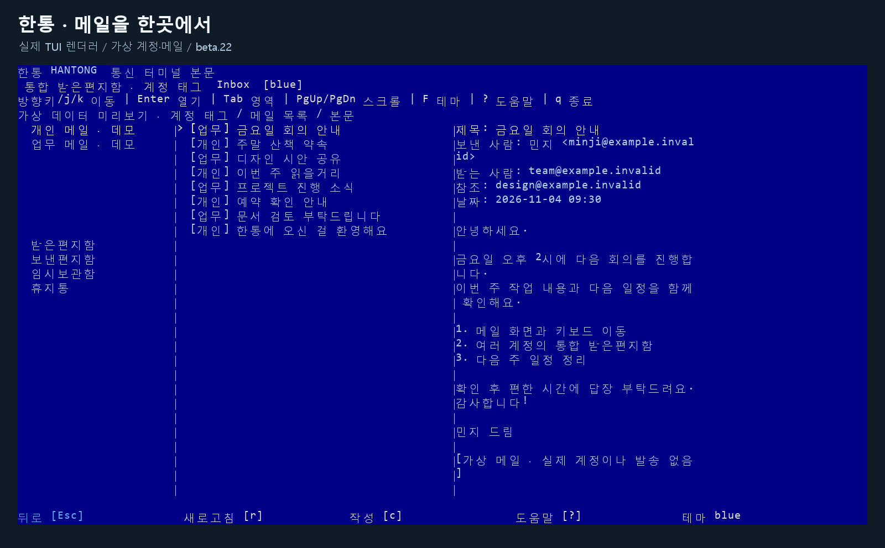

Windows 11 x64 · Linux x86_64 glibc ≥ 2.39 · macOS 15 Intel/Apple Silicon · CLI beta.22
메일과 AI를
한 터미널에서
내 컴퓨터에서 여러 계정의 메일을 읽고 작성하는 메일 클라이언트입니다. 한통의 설정·내용 확인·보내기·취소는 같은 터미널에서 진행합니다. 별도 한통 확인창이나 Windows Hello를 요구하지 않으며, Google 로그인·동의만 표준 브라우저에서 진행합니다.

beta.22 안내: Windows 11 x64, Linux x86_64(glibc ≥ 2.39, headless·SSH 포함), macOS 15 Intel·Apple Silicon용 설치 파일을 제공합니다. Windows는 격리 설치·제거 뒤 데이터와 PATH 보존을 별도로 확인했습니다. macOS는 두 아키텍처의 설치·시작·암호화 DB·상태·중지·재시작을 native CI에서 확인했습니다. Linux는 별도 GUI/DBus 없는 격리 환경에서 보호된 첫 시작·재시작·잘못된 잠금 해제 뒤 암호문 보존·비TTY 거부를 확인했습니다. Unix 실제 제공자 로그인·메일 읽기·발송·휴지통·AI 대화는 아직 시험하지 않았으며, 사람 보안 검토가 남아 있습니다.
설치 → 실행 → 계정 연결 → Google 동의 → 이용
- 설치·업데이트: Windows PowerShell에서 아래 명령을 실행하세요. beta.5부터는 설치 후
update hantong또는hantong update로 업데이트할 수 있습니다. beta.3·beta.4 사용자는 먼저 아래 설치 명령을 한 번 실행해야 업데이트 명령이 추가됩니다.irm https://raw.githubusercontent.com/tz1012/mail-hantong/3eabc14b9ed8463aa58db0304dbf86d6da00bb94/install.ps1 | iex설치기는 공개 릴리스의 체크섬을 확인합니다. GitHub API가 일시적으로 403 또는 429를 반환하면 같은 저장소의 공개 릴리스 피드를 사용해도 고정된 GitHub 자산 URL·HEAD 크기·SHA256을 다시 확인합니다. 피드가 잘못되면 설치를 중단합니다. 일반 메일 이용에 Rust·Python·Docker·Google Cloud 설정 파일은 필요하지 않습니다. ZIP으로 직접 설치할 때는 릴리스의
SHA256SUMS를 대조하세요. - beta.22 Windows 설치: 배포용 Google 설정 파일을 포함할 때 Windows의 짧은 경로와 긴 경로가 같은 파일을 가리키는지 정확히 확인합니다. 기존 계정·키·메일 데이터와 PATH는 보존합니다.
- 구버전 업데이트 오류:
Join-Path또는drive오류가 나면 위 설치 명령으로 직접 교체하세요. 계정 저장소는 보존합니다. 프로그램만 제거하는 방법은 Windows 복구·재설치 안내에서 확인하세요. - 실행: 같은 터미널에서 한국어 시작 메뉴를 여세요.
hantong --lang ko init로컬 코어는 필요할 때 자동으로 시작합니다. 이미 연결한 계정이 있으면 계정을 선택해 계속 이용할 수 있습니다. 일반 계정은 첫 메뉴에서
3, 기존 계정 메뉴에서imap을 선택합니다. - 계정 연결: Google 계정 연결을 고르면 바로 브라우저에서 메일 읽기·작성·발송에 필요한 로그인·동의를 진행합니다. 기존 읽기 전용 계정은 메일 작성·보내기 활성화로 기능을 추가할 수 있습니다.
- Google 동의: 브라우저에서 사용할 계정과 요청된 메일 권한을 확인하세요. 한통에 Google 비밀번호를 입력하지 않습니다. Google의 운영 게시 상태와 검증 심사 완료는 별개이므로 미검증 안내가 표시될 수 있습니다.
- 메일 이용: 터미널로 돌아와 받은편지함을 보거나 메일을 작성하세요. 발송 전에는 수신자·제목·본문·첨부 전체를 확인하고 보내기 또는 취소를 선택합니다.
같은 Google 계정·동일한 권한으로 다시 연결하면 중복 등록 없이 기존 연결을 사용합니다. 새 계정은 기존 계정을 교체하지 않으며, 터미널에 표시된 계정 목록과 기능을 확인한 뒤 추가합니다. IMAP/SMTP 설정은 작업 메뉴 6에서 서버·포트·TLS·로그인·별도 발신 주소를 입력하고, 비밀번호는 같은 터미널의 보호 입력에서만 입력합니다.
macOS·Linux 설치와 headless 시작
Rust·Python·Docker·WSL 없이 설치할 수 있습니다. Linux는 x86_64 glibc 2.39 이상(glibc>=2.39)과 GUI/DBus 없는 headless·SSH를 지원합니다. macOS는 15의 Intel·Apple Silicon에서 실제 HOME과 잠금 해제된 Keychain을 사용하며 notarization은 주장하지 않습니다.
installer=$(mktemp)
curl -fsSL -o "$installer" https://raw.githubusercontent.com/tz1012/mail-hantong/3eabc14b9ed8463aa58db0304dbf86d6da00bb94/install.sh
sh "$installer"
export PATH="$HOME/.local/bin:$PATH"
hantong --lang ko설치 후 ~/.local/bin이 PATH에 포함됐는지 확인하세요. Linux 서버에서는 첫 실행 시 1) headless passphrase를 선택하고 금고 암호를 두 번 입력한 다음 계정 메뉴로 진행합니다. 입력한 암호는 화면에 표시되지 않습니다. Core를 재시작할 때마다 터미널에서 잠금을 해제해야 합니다. 암호를 명령 인자·환경 변수·채팅에 넣지 마세요. macOS에서는 잠금 해제된 Keychain을 사용합니다. Google SSH 연결에는 안전한 loopback 브라우저 전달이 필요하고, 일반 IMAP/SMTP에는 브라우저가 필요하지 않습니다.
지원 플랫폼: beta.22는 Windows 11 x64, Linux x86_64(glibc ≥ 2.39, GUI/DBus 없는 headless·SSH), macOS 15(Intel·Apple Silicon)에서 설치와 Core 시작·중지·재시작을 제공합니다. Linux와 macOS를 지원하지 않는다는 이전 안내는 폐기합니다. 위 설치 안내의 비밀 입력·TTY·Keychain 조건을 따릅니다.
메일 이용과 기능 전환
| 선택 | 할 수 있는 일 |
|---|---|
| 1 · 받은편지함 보기 | 메일 목록을 보고 선택한 메일의 텍스트 본문을 읽습니다. |
| 2 · 다른 계정 연결 | 다른 Google 계정 연결을 시작합니다. |
| 4 · 메일 작성 및 보내기 활성화 | 읽기용 계정에 작성·보내기를 추가합니다. 필요한 Google 권한을 다시 확인하며, 기능을 켜는 것만으로 메일을 보내지는 않습니다. |
| 5 · 메일 작성 | 받는 주소·제목·본문과 선택한 첨부를 입력하고 전체 내용을 검토한 뒤 보냅니다. |
| 3 · 종료 | 메뉴를 종료합니다. |
Gmail의 라벨·읽음 변경, 명시적 동기화, 초안·첨부 작성과 고급 IMAP·SMTP 설정도 CLI 명령으로 제공합니다. hantong-t에서는 j/k로 이동하고 Enter로 열며 c로 작성하고 t로 한 통을 휴지통으로 이동합니다. 휴지통은 서버가 MOVE와 정확히 하나의 선택 가능한 \Trash 사서함을 제공할 때만 실행되며, 영구 삭제로 대체하지 않습니다. 고급 설정의 비밀값은 같은 콘솔의 숨김 입력으로 다룹니다. 자세한 명령은 설치·사용 안내를 확인하세요.
계정 정보·메일 캐시·초안·작업 이력은 PC에 보관합니다. 업데이트와 프로그램 제거는 기존 데이터와 보호 키를 보존합니다. 전송 결과가 불확실하면 자동으로 다시 보내지 않으므로, 상태를 확인하기 전에 같은 메일을 반복해서 보내지 마세요.
CLI 키·언어 안내: 계정·폴더·메일은 방향키와 Enter 또는 번호로 선택합니다. / 키를 누르면 명령이 즉시 표시되고 /help로 설명을 확인합니다. /language로 한국어·영어를 선택하거나 /language ko, /language en으로 바로 바꿉니다. 현재 세션에만 적용하며 다음 실행의 설정은 바꾸지 않습니다. TUI는 : 뒤에 language ko 또는 language en을 입력합니다.
메일 읽기: 제목·보낸 사람·받는 사람·참조·날짜와 본문을 함께 표시합니다. CLI는 자체 읽기 화면에서 /next·/prev로 페이지를 이동하고 Esc·/back으로 이전 선택에 돌아옵니다. 메일을 보면서 /ai codex, /ai claude, /agent를 입력할 수 있습니다. 아래의 AI 제공자 지원 제한은 그대로 적용됩니다.
통신풍 전체 화면 TUI
hantong은 번호를 입력해 메일을 여는 안내형 CLI이고, hantong-t는 같은 Core와 안전 경계를 사용하는 별도 전체 화면 터미널 클라이언트입니다. TUI는 준비된 모든 계정의 캐시된 Inbox를 첫 화면에 계정 태그와 함께 표시합니다. 방향키와 j/k, Enter, PageUp/PageDown으로 긴 목록과 본문을 탐색하고, 마우스 클릭·더블클릭·휠도 사용할 수 있습니다. 일반 CLI에서는 번호를 입력해 메시지를 엽니다.
u는 통합 Inbox, a는 표시용 계정 별칭, v는 본문 확장을 엽니다. 기본 파랑 테마 외에 green, amber, mono, 통신풍 ANSI bbs8·bbs16 테마를 선택할 수 있으며, 시작 중에는 준비 애니메이션 뒤 버전·업데이트 안내가 표시됩니다. 이 표시 설정은 계정 권한이나 발송 확인을 바꾸지 않습니다.
선택 기능: AI 계정 연결과 대화
일반 메일 이용에 AI는 필수가 아닙니다. AI는 기본 메일 메뉴와 별도의 명령으로 시작합니다. 공식 Codex CLI 또는 Claude Code 실행 프로그램을 먼저 설치하세요. 로그인과 자격증명은 해당 공식 도구가 관리하고, 한통은 그 토큰 파일을 읽지 않습니다.
Codex 연결 예시
hantong ai providers --json
hantong ai login codex
hantong ai status codex
hantong ai chat codexClaude Code에 이미 구독 계정으로 로그인했다면 /ai claude 또는 hantong ai chat claude가 같은 터미널의 공식 Claude Code 세션으로 전환합니다. 한통이 프롬프트·응답·로그인 토큰을 중계하지 않으며 Ctrl+C를 두 번 누르면 돌아옵니다. 사용자 명령은 비활성화되며 대화 기록은 Claude Code 자체 설정을 따릅니다. 처음에는 한통에서 Claude와 공유할 계정을 확인합니다. Console/API 로그인은 기존 한통 내장 대화를 사용합니다. JSON·스크립트·--prompt에서 구독 로그인을 내장 대화에 사용하는 방식은 지원하지 않습니다. 두 제공자의 실제 합성 질문·후속 질문과 문맥 유지를 확인했습니다. 실제 AI 메일 발송·휴지통 이동은 별도 검증 항목입니다.
| 명령 | 동작 |
|---|---|
/provider | Codex/OpenAI와 Claude 중 선택합니다. |
/model | 선택한 공급자의 모델 목록에서 고릅니다. |
/mode | 모델이 지원하는 추론 강도를 선택합니다. |
/fast on · /fast off | 지원되는 빠른 처리 설정을 켜거나 끕니다. 속도나 비용을 보장하는 옵션은 아닙니다. |
/agent on · /agent off | 내장 AI의 메일 도구 사용을 켜거나 끕니다. 최초 연결은 같은 터미널에서 제공자별 계정·외부 전송 기능을 확인한 뒤 자동으로 설정됩니다. |
/status · /cli | 현재 설정을 확인하거나 대화에서 명령줄로 돌아옵니다. |
AI 메일 도구 자동 연결
내장 Codex 또는 Claude를 처음 사용할 때 같은 터미널에서 제공자별 계정 목록과 외부 AI 전송 기능을 확인합니다. 확인을 마치면 표시된 준비 완료 계정 전체의 메일 읽기·본문·작성·발송 요청·단일 메일 휴지통 이동 도구가 자동으로 연결됩니다. 현재는 계정별 부분 선택을 지원하지 않으며, 취소하면 연결하지 않습니다. 기존 내장 AI 등록은 새 계정으로 자동 확대되지 않습니다. 별도의 hantong-mcp register, 요청 ID 복사, hantong review, 필수 /agent on 절차는 필요하지 않습니다.
AI에 입력한 프롬프트·대화 맥락과 허용된 메일 도구 결과는 선택한 외부 AI 서비스로 전송될 수 있습니다. AI 도구 연결만으로 발송이나 삭제가 실행되지는 않습니다. 발송과 휴지통 이동은 같은 터미널에서 전체 내용을 확인한 뒤 명시적으로 선택해야 합니다. 외부 전송과 저장 범위를 먼저 읽어 주세요.
Codex 연결 수정: beta.22는 지원되는 Windows 호스트에서 세션 전용 MXC 격리를 사용합니다. 디스크 읽기는 기본 거부하고 최소 실행 경로와 새 임시 폴더만 허용합니다. 이 PC에서 허용/거부 파일 검사와 실제 합성 질문 응답을 확인했으며, 모델 시험에 메일 내용을 넣지 않았습니다. MXC를 지원하지 않는 호스트에서는 읽기 권한을 넓히지 않고 종료합니다. 전역 Codex 설정·UAC·기존 계정은 변경하지 않습니다.
명령 표는 한통 내장 대화에 적용됩니다. 제한된 공식 Claude Code 세션에서는 사용자 명령을 끄고 Ctrl+C 두 번으로 한통에 돌아옵니다.
Historical beta.20 evidence
- 이번 beta는 전체 1,906개 검사를 새로 반복하지 않고, 변경 영향에 맞춘 Store/Core/CLI·SMTP·설치 회귀 검사를 수행합니다. 이전 통합 기준의 전체 검사 결과를 이번 beta의 새 전체 검사 결과로 표시하지 않습니다.
- 실제 Gmail 계정에서 터미널 취소, 본인 주소로 합성 메일 1회 발송·수신, 본문·첨부 내용 일치와 자동 재발송 없음은 beta.3에서 확인한 결과입니다.
- Codex와 Claude 각각 실제 2턴의 합성 대화와 문맥 유지·정상 종료를 확인했습니다. 메일 내용은 요청하지 않았고 기존 로그인을 사용했습니다. 실제 AI 메일 발송·휴지통 이동은 수행하지 않았습니다. Daum IMAP·SMTP 인증, 합성 메일 발송 상태, 사서함 17개 조회와 본문 읽기는 이전 버전에서 확인했습니다.
- 새 Windows 가상 머신 점검·사람 보안 검토·Google 검증 심사 완료는 별도 과제입니다. 터미널 선택은 요청 의도이며 OS 본인 확인 증거가 아닙니다.
현재 버전은 CLI beta.22입니다. /help를 입력하면 현재 CLI에서 이용 가능한 명령과 설명을 확인할 수 있습니다. 전체 메일함 자동 동기화, 예약 발송·주소록·규칙 자동화, 일반 첨부 다운로드·풍부한 HTML 표시는 이번 배포의 완료 기능으로 안내하지 않습니다. Unix 실제 제공자 로그인·메일 읽기·발송·휴지통·AI 대화는 아직 검증하지 않았습니다. Gmail과 지원되는 일반 IMAP 계정은 조건을 충족할 때 단일 메일을 휴지통으로 이동할 수 있으며, 영구 삭제·대량 삭제·스팸 삭제·IMAP EXPUNGE는 지원하지 않습니다. Gmail 휴지통 이동에는 Modify 권한과 터미널 최종 확인이 필요합니다. Google 수정 권한 자체의 범위는 앱 기능보다 넓을 수 있으므로 연결 화면을 확인하세요.
상세 명령과 제약은 CLI 사용 안내와 진행 기록에 있습니다. 이용 안내와 라이선스도 함께 확인하세요.